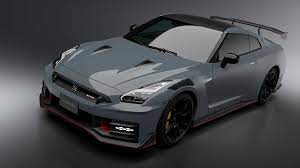

|
 |
AÑO DE LANZAMIENTO: 2007. MOTOR: V6 doble turbocargado de 3.8 litros. POTENCIA: 565cv. VELOCIDAD MÁXIMA: 315 Km/h ACELERACIÓN 0 A 100 KM/H: 2,7 seg. En esta generación, al igual que en la R32, la potencia se mantuvo sin cambios en los 276 CV, aunque el par aumentó ligeramente hasta los 367 Nm, algo que redundó en una mejor aceleración, cubriendo el 0-100 km/h en 0.2 segundos menos. Los rumores apuntaban a que el motor RB26 debería haber ofrecido unas mayores prestaciones tal y como las que podemos ver en algunas preparaciones, sin embargo, para mantener a la Asociación de Fabricantes de Automóviles Japonenes tranquilos, esta potencia se limitó en los años 80 y 90 -respetado un curioso «pacto de caballeros». |